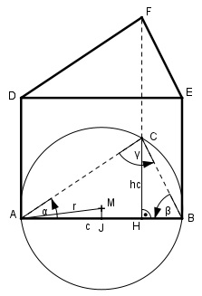
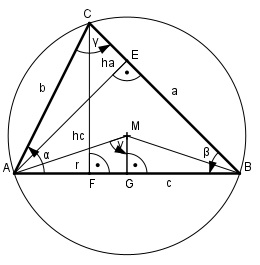

Aufgabe 176 Ein gerades dreiseitiges Prisma hat ein Volumen von 400 cm³. Seine Grundfläche hat die Winkel α = 42,5° und β = 71,3°. Wie groß ist das Volumen V des umschriebenen Zylinders?

γ = 180° - α – β = 180° - 42,5° – 71,3° = 66,2° VPrisma = AD * h VZylinder = AK * h = r2 * π * h Zur Herleitung:
Im Dreieck ABC: c * hc AD = -------- 2 hc sin α = ---- |*b b hc = b * sin α Eingesetzt: b * c AD = -------- * sin α (1) 2 Im Dreieck AFC: ha sin γ = ----- | *b b ha = b * sin γ Im Dreieck ABE: ha sin β = ---- | *c c ha = c * sin β Gleichgesetzt: b * sin γ = c * sin β |:sin γ c * sin β b = ----------- sin γ In (1) eingesetzt: c * sin β * c * sin α c2*sin β*sin α AD = ------------------------ = ----------------- 2 * sin γ 2 * sin γ Im Dreieck AGM: Der Umfangswinkel γ über der Sehne AB = halber Mittelpunktswinkel c/2 sin γ = ------ |*r r r * sin γ = c/2 |*2 2 * r * sin γ = c |:2 * sin γ c r = ----------- 2 * sin γ c2 r2 = ------------ 4 * sin2 γ VPrisma = AD * h = c2 * sin α * sin β = -------------------- * h | * 2 * sin γ 2 * sin γ VPrisma * 2 * sin γ = = c2 * sin α * sin β * h | :c2 * sin α * sin β VPrisma * 2 * sin γ h = ---------------------- (2) c2 * sin α * sin β VZylinder = r2 * π * h |:r2 * π r2 eingesetzt: c2 VZylinder = ------------- * π * h | *4 * sin2 γ 4 * sin2 γ VZylinder * 4 * sin2 γ = c2 * π * h |:c2 * π VZylinder * 4 * sin2 γ h = ------------------------ (3) c2 * π Zylinderhöhe (2) = Prismahöhe (3) VPrisma * 2 * sin γ ----------------------- = c2 * sin α * sin β VZylinder * 4 * sin2 γ = ------------------------ | *c2 * π c2 * π VPrisma * 2 * sin γ * π -------------------------- = sin α * sin β = VZylinder * 4 * sin2 γ |: 4 * sin2 γ VPrisma * 2 * sin γ * π VZylinder = ---------------------------- = 4 * sin α * sin β * sin2 γ VPrisma * π = gekürzt = -------------------------- 2 * sin α * sin β * sin γ 400 cm³ * π VZylinder = --------------------------------- = 2*sin 42,5°*sin 71,3°*sin 66,2° 400 cm³ * π VZylinder = ------------------------------- = 2 * 0,6756 * 0,9472 * 0,915 = 1 072,5 cm3